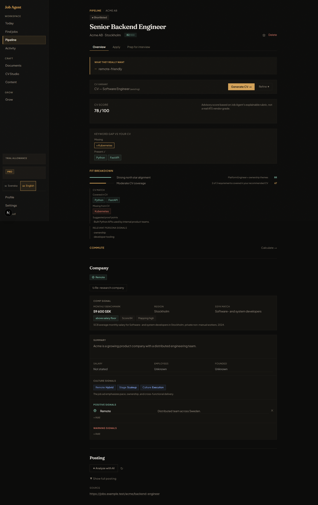
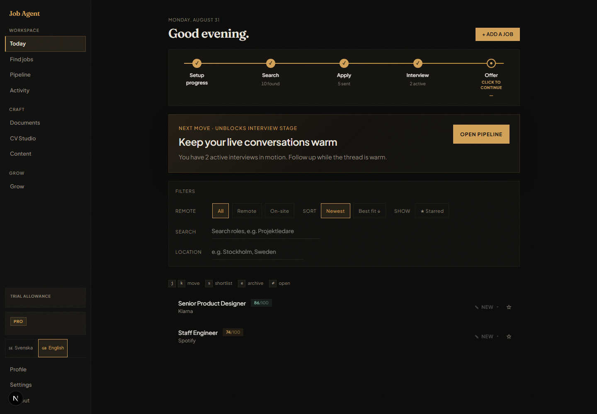
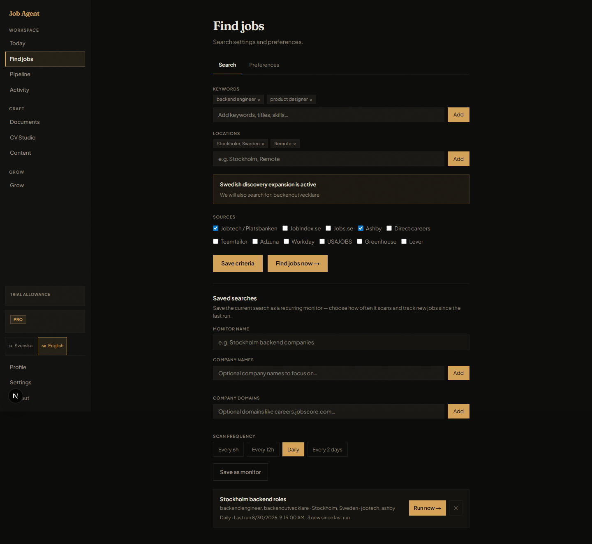
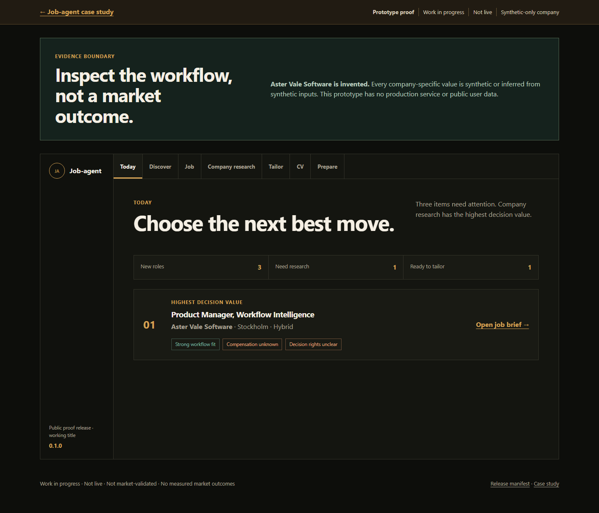
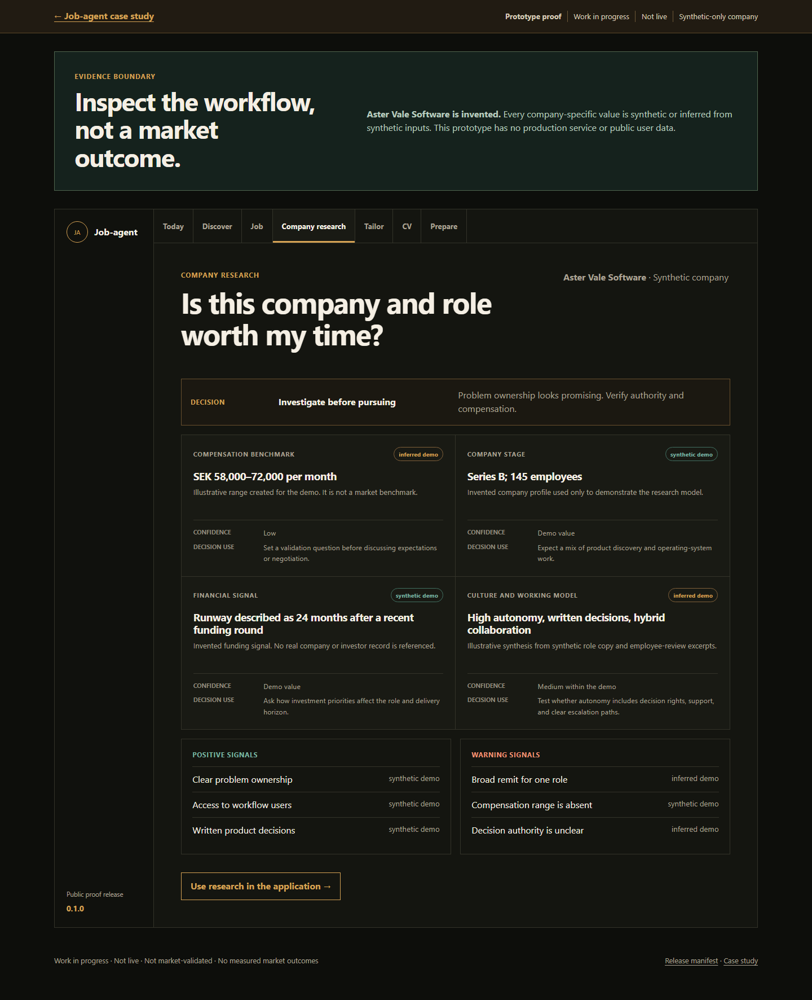
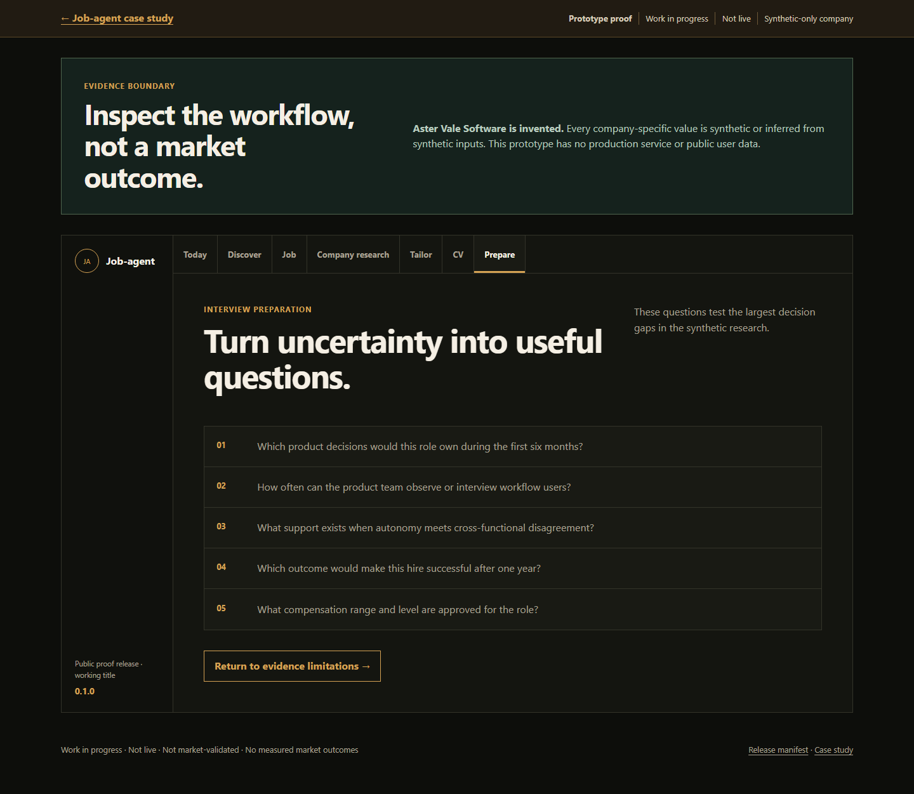

{kind=link}
{kind=link}
{kind=link}
{kind=link}
{kind=link}
{kind=link}
Compensation benchmark
inferred demoSEK 58,000–72,000 per month
Illustrative range created for the demo. It is not a market benchmark.
- Confidence
- Low
- Decision use
- Set a validation question before discussing expectations or negotiation.
90-second summary · Lead proof
Job-agent connects discovery, company research, application tailoring, and interview preparation. The current proof shows the decision model and recruiter-safe interface, not market outcomes.
Evidence boundary
Work in progress. Job-agent (a working title, not the final product name) is not live and is not market-validated. The release-one company is invented. Company-specific values are synthetic or inferred from synthetic inputs.
Next test: Moderated recruiter review of the synthetic company-research decision flow.
Privacy: Release privacy review complete.
Selected proof path · Option B
A short visit should expose the strongest product judgment first. Today and Find jobs remain available as supporting context.
Decision support
Keep fit, CV gaps, company signals, and the next action together at the point of decision.
Evidence: The job-detail view makes the reasoning visible before application work begins.
Supporting context
Use the Today view to orient the search and see the next best move before opening a role.
Evidence: The current shell connects the job funnel, focus action, filters, and scored opportunities.
Supporting context
Show how search criteria, sources, and recurring monitoring bring new roles into the workspace.
Evidence: Find jobs keeps discovery inputs and monitoring status visible together.
Current frontend capture · 31 August 2026 · English UI · synthetic data



Earlier UI version · v0.5
Keep the earlier proof visible so the interface evolution is clear: from a guided decision workflow to the current product shell.
Original proof framing. Job-agent connects discovery, company research, application tailoring, and interview preparation. The current proof shows the decision model and recruiter-safe interface, not market outcomes.
Aster Vale Software is invented. Every company-specific value is synthetic or inferred from synthetic inputs. This prototype has no production service or public user data.
Earlier decision question
Combine new roles, saved work, stale items, and missing data into one decision queue.
Evidence: The Today view puts the next decision before filters and detail.
Earlier decision question
Structure compensation, stage, financial, culture, and role signals around a pursue, investigate, or pass decision.
Evidence: Every field keeps its provenance and states the decision it informs.
Earlier decision question
Translate research into a tailored emphasis, validation questions, and a compensation check.
Evidence: Decision outputs stay traceable to the research fields that support them.
Earlier public proof capture · 25 August 2026 · English UI · synthetic data



Primary evidence · Company research
Current decision
Investigate before pursuing
Problem ownership and user access look promising. Decision authority and compensation need verification.
Compensation benchmark
inferred demoSEK 58,000–72,000 per month
Illustrative range created for the demo. It is not a market benchmark.
Company stage
synthetic demoSeries B; 145 employees
Invented company profile used only to demonstrate the research model.
Financial signal
synthetic demoRunway described as 24 months after a recent funding round
Invented funding signal. No real company or investor record is referenced.
Culture and working model
inferred demoHigh autonomy, written decisions, hybrid collaboration
Illustrative synthesis from synthetic role copy and employee-review excerpts.
Positive signals
Warning signals
Research → downstream decisions
Lead with workflow simplification, cross-functional scope, and evidence discipline.
Supported by stage and culture signalsTest product decision rights, user access, team support, and the meaning of autonomy.
Supported by positive and warning signalsValidate the range with a current source before setting an anchor.
Supported by low-confidence compensation evidenceOptional interactive depth
The prototype uses the same synthetic fixture and evidence labels. It demonstrates the research decision flow. It does not connect to a production service.
Limitations
Transparent limits keep interface progress separate from product validation.
The public proof uses static HTML, CSS, and a versioned JSON fixture. Core content does not depend on client-side rendering.